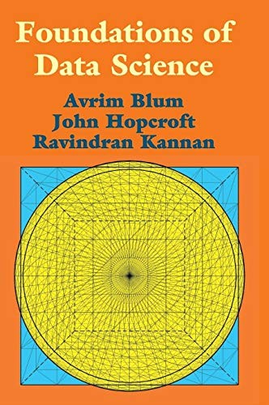
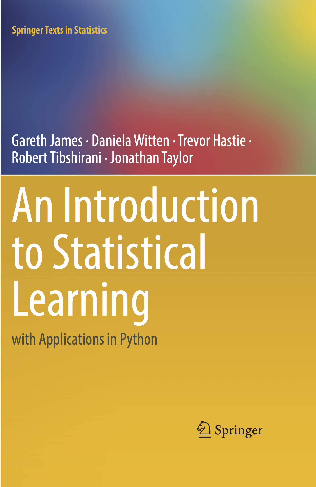
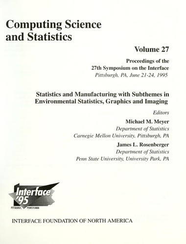
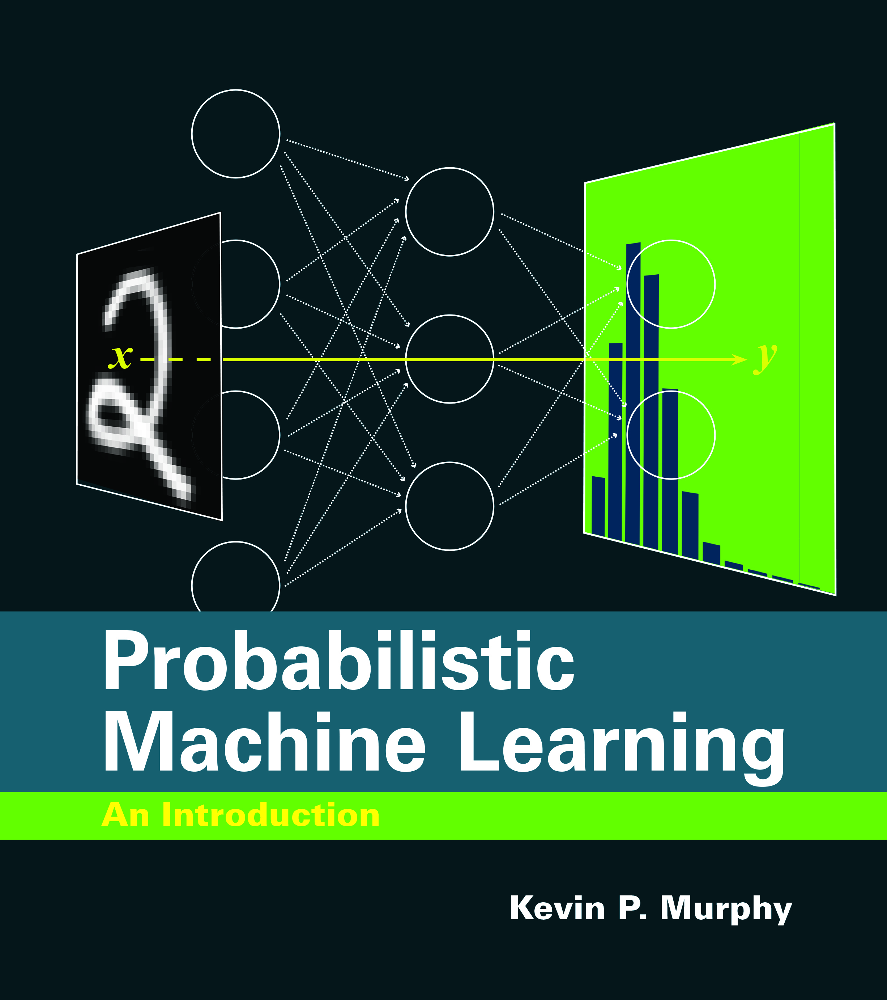
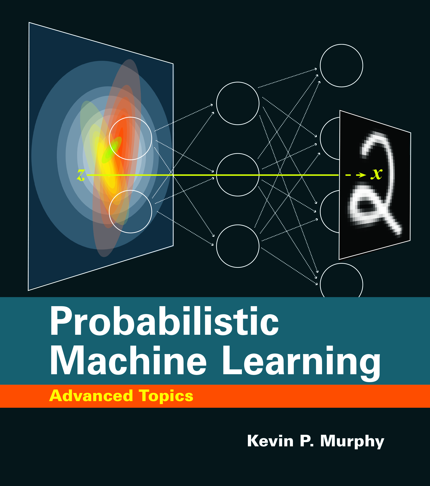
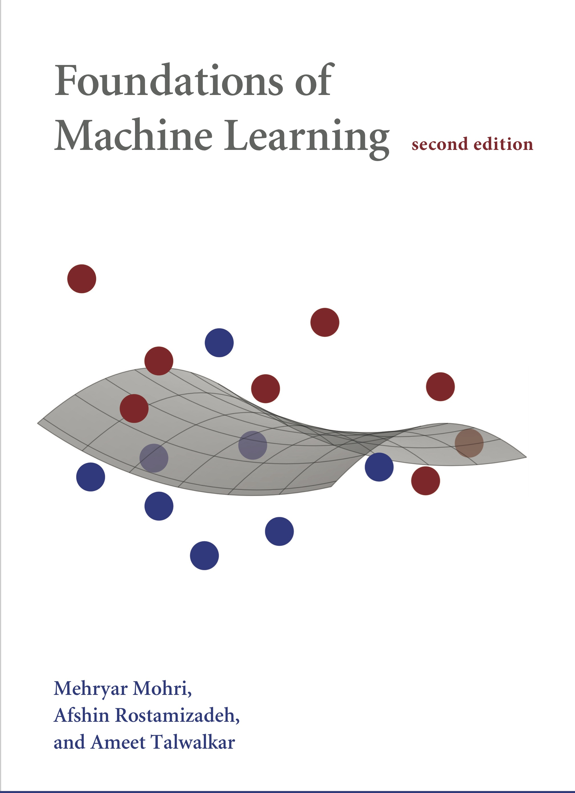

Academic Framework
Course Overview & Policies
Syllabus sequence, prerequisite foundations, grading criteria, and academic integrity regulations.
Syllabus Topics
Topics covered in chronological sequence across the semester:
- Data Science lifecycle
- Types of data
- Statistical Inference
- Machine learning
- Supervised learning (Regression / Classification)
- Probabilistic learning
- Generative models
- Bayesian models
- Neural networks
- Evaluation metrics
- Kernel methods
- Unsupervised learning
- Dimensionality Reduction
- Clustering
- Deep learning (CNN • RNN • NLP • GNN)
Academic Integrity & Generative AI Policy
The academic use of generative AI tools is permitted as supplementary study aids; however, submitted assignments must reflect the student's individual intellectual mastery. Each homework assignment is accompanied by an individual oral or written verification quiz.
Evaluation Rule: \(\text{Final HW Grade} = \text{Assignment Score} \times \text{Quiz Coefficient}\).
Students are required to defend their theoretical derivations and explain all algorithmic code implementations during the scheduled evaluation quizzes.
Grading & Assessment Scheme
| Theoretical Problem Sets (HW) | 25% |
| Computer Assignments & Labs (CA) | 25% |
| Quizzes & Midterm Examination | 20% |
| Capstone Data Science Project | 25% |
| Academic Participation & Engagement | 5% |
Prerequisites & Academic Preparation
Formal undergraduate preparation in Probability & Mathematical Statistics, Linear Algebra, and programming proficiency in Python (scientific computing stack including NumPy, SciPy, and Matplotlib).
Timeline
Course Schedule & Calendar
Chronological schedule of lectures, quizzes, and project milestones held in Class 8 of Engineering Science (9:00 – 10:30 AM).
Week 01
Lecture 01
Sun, Sep 28 • 9:00 – 10:30 AM
Introduction & DS Lifecycle
What is Data Science, Big Data 4Vs, lifecycle stages, and data types (categorical vs numerical).
Week 01
Lecture 02
Tue, Sep 30 • 9:00 – 10:30 AM
Probability Review (Part 1)
Sample space, axioms, conditional probability, Bayes' rule, and random variables.
Week 02
Lecture 03
Sun, Oct 05 • 9:00 – 10:30 AM
Probability Review (Part 2)
Joint/conditional distributions, marginals, independence, expectation, variance, and covariance.
Week 02
Lecture 04
Tue, Oct 07 • 9:00 – 10:30 AM
Sampling Methods & Bias
Simple random sampling, stratified, cluster, systematic sampling, and sampling bias.
Week 03
HW 01 Quiz
Sun, Oct 12 • 9:00 – 10:30 AM
HW 1 Verification Quiz
In-class quiz for HW 1 (1.0 coefficient multiplier on homework grade).
Week 03
Lecture 05
Tue, Oct 14 • 9:00 – 10:30 AM
Point Estimation & MLE
Estimator vs estimate, unbiasedness, likelihood functions, and MLE derivations (Bernoulli & Exponential).
Week 04
Lecture 06
Sun, Oct 19 • 9:00 – 10:30 AM
Continuous MLE & Invariance
Normal & Uniform MLE, indicator supports, order statistics, and MLE invariance property.
Week 04
Lecture 07
Tue, Oct 21 • 9:00 – 10:30 AM
MSE & Cramér-Rao Bound
MSE decomposition (Var + Bias²), relative efficiency, Fisher Information, and CRLB proof.
Week 05
Lecture 08
Sun, Oct 26 • 9:00 – 10:30 AM
Fisher Simplifications & WLLN
Fisher 2nd derivative identities, Markov & Chebyshev inequalities, and Weak Law of Large Numbers.
Week 05
Lecture 09
Tue, Oct 28 • 9:00 – 10:30 AM
Central Limit Theorem
Convergence in distribution, normal distributions, standard normal CDF, and Central Limit Theorem (CLT).
Week 06
Lecture 10
Sun, Nov 02 • 9:00 – 10:30 AM
Asymptotic Properties of MLE
Consistency, asymptotic normality & efficiency, regularity conditions, and Continuous Mapping Theorem.
Week 06
Lecture 11
Tue, Nov 04 • 9:00 – 10:30 AM
Confidence Intervals & Student's t
Pivotal quantities, large-sample intervals via CLT/Slutsky, Chi-squared, and Student's t-distribution.
Week 06
Milestone
Thu, Nov 06 • 23:59 PM
Project Proposal Due
Dataset selection, analytical problem statement, and baseline methodology plan.
Week 07
Lecture 12
Sun, Nov 09 • 9:00 – 10:30 AM
Two-Sample Inference & Proportions
Difference of means (pooled and Welch t), single proportion intervals, and A/B testing difference of proportions.
Week 07
Lecture 13
Tue, Nov 11 • 9:00 – 10:30 AM
Foundations of AI & Agents
Rational agent paradigm, PEAS environment specifications, agent architectures, and learning agents.
Week 08
Lecture 14
Sun, Nov 16 • 9:00 – 10:30 AM
Supervised Learning & Metrics
Regression vs. classification, empirical risk minimization, Iris dataset, cross-validation, and metrics.
Week 08
Lecture 15
Tue, Nov 18 • 9:00 – 10:30 AM
Linear Regression & Optimization
OLS cost function, batch gradient descent derivation, vectorization, and closed-form Normal Equations.
Week 09
Lecture 16
Sun, Nov 23 • 9:00 – 10:30 AM
Logistic Regression & Classification
Sigmoid activation, logit and odds ratio, binary cross-entropy loss, decision boundaries, and gradient descent.
Week 09
Lecture 17
Tue, Nov 25 • 9:00 – 10:30 AM
Regularization: Ridge & Lasso
Bias-variance tradeoff, L2 Ridge regression weight decay, L1 Lasso feature sparsity, and Elastic Net.
Week 10
Lecture 18
Sun, Nov 30 • 9:00 – 10:30 AM
GLMs & Generative Learning
Generalized Linear Models, exponential family, Softmax regression, and Gaussian Discriminant Analysis (GDA).
Week 10
Midterm Exam
Tue, Dec 02 • 9:00 – 10:30 AM
Midterm Examination
Comprehensive exam covering Lectures 01 through 18 in Class 8 of Engineering Science.
Week 11
Lecture 20
Sun, Dec 07 • 9:00 – 10:30 AM
Naive Bayes & Neural Nets
Naive Bayes conditional independence, Laplace smoothing, text classification, and neuron model foundations.
Week 11
Lecture 21
Tue, Dec 09 • 9:00 – 10:30 AM
Deep Networks & Backprop
Forward propagation, backpropagation chain rule derivation, weight initialization, and gradient checking.
Week 12
Lecture 22
Sun, Dec 14 • 9:00 – 10:30 AM
ML Diagnostics & Advice
Evaluating hypotheses, bias vs variance diagnostics, learning curves, and skewed class metrics (F1 score).
Week 12
Lecture 23
Tue, Dec 16 • 9:00 – 10:30 AM
Kernel Methods & The Kernel Trick
Feature maps, dual representations, polynomial & Gaussian RBF kernels, and Mercer's theorem.
Week 13
Lecture 24
Sun, Dec 21 • 9:00 – 10:30 AM
Support Vector Machines
Functional & geometric margins, optimal margin classifier, Lagrange duality, and soft-margin SVM.
Week 13
Lecture 25
Tue, Dec 23 • 9:00 – 10:30 AM
SVM Duality & K-Means
Hinge loss synthesis, unsupervised learning introduction, K-Means clustering algorithm, and distortion convergence.
Week 14
Lecture 26
Sun, Dec 28 • 9:00 – 10:30 AM
Gaussian Mixtures & EM
Latent variable mixture models, soft clustering, Expectation-Maximization (EM) algorithm, and ELBO.
Week 14
Lecture 27
Tue, Dec 30 • 9:00 – 10:30 AM
PCA & Dimensionality Reduction
Principal Component Analysis (PCA), covariance eigensystems, reconstruction error, SVD, and Fisher's LDA.
Week 15
Lecture 28
Sun, Jan 04 • 9:00 – 10:30 AM
Independent Component Analysis
The cocktail party problem, non-Gaussianity requirement, change of variables density, and natural gradient ascent.
Week 15
Milestone
Tue, Jan 06 • 9:00 AM
Final Project Presentations
Capstone project presentations, final codebase submissions, and technical report evaluations.
Curriculum
Open Slides Folder
Course Lectures & Materials
Structured lectures covering the complete syllabus. Each lecture provides an interactive online note and direct link to presentation slides.
Chapter 01: Data Science Lifecycle & Probability Foundations
Lectures 01 – 03
Lecture 01
Sep 28, 2026
Introduction to Data Science & Lifecycle
What is Data Science, Big Data 4Vs (Volume, Velocity, Variety, Veracity), interdisciplinary skills, lifecycle stages, and types of data (structured vs unstructured, categorical vs numerical).
Lecture 02
Sep 30, 2026
Review of Probability Theory (Part 1)
Sample space, event algebra, probability axioms, conditional probability, Law of Total Probability, Bayes' rule, and discrete vs continuous random variables.
Lecture 03
Oct 05, 2026
Probability Distributions & Expectations (Part 2)
Probability density and mass functions (PDF, PMF, CDF), joint distributions, marginalization, conditional distributions, statistical independence, expectation, variance, and covariance.
Chapter 02: Sampling & Statistical Estimation
Lectures 04 – 05
Lecture 04
Oct 07, 2026
Sampling Methods & Sampling Bias
Population vs random sample, simple random sampling, stratified sampling, cluster sampling, systematic sampling, and sources of sampling bias.
Lecture 05
Oct 14, 2026
Point Estimation & Maximum Likelihood Estimation (MLE)
Random samples, point estimators vs estimates, unbiased estimators, variance of estimators, likelihood function, log-likelihood, and MLE derivations for Bernoulli & Exponential models.
Chapter 03: Continuous Distributions & Invariance Property
Lecture 06
Lecture 06
Oct 19, 2026
Continuous MLEs & The Invariance Property
MLE for Normal distribution (mean & variance), sample variance bias, Uniform\((0, \theta)\) MLE with indicator bounds and order statistics \(\max(X_i)\), reparameterization, and invariance of maximum likelihood estimators.
Chapter 04: Estimator Optimality & Information Bounds
Lectures 07 – 08
Lecture 07
Oct 21, 2026
MSE, Efficiency & Cramér-Rao Lower Bound
Mean Squared Error decomposition (\(\text{MSE} = \text{Var} + \text{Bias}^2\)), relative efficiency, Fisher Information definition, Cramér-Rao Lower Bound (CRLB) derivation via Cauchy-Schwarz, and Uniformly Minimum Variance Unbiased Estimators (UMVUE).
Lecture 08
Oct 26, 2026
Fisher Information Simplifications & Weak Law of Large Numbers
Fisher Information computational simplifications (second derivative identity \(I_n = -E[\partial^2/\partial\theta^2 \ln f]\), i.i.d. additivity), Markov's inequality, Chebyshev's inequality, convergence in probability, and proof of the Weak Law of Large Numbers (WLLN).
Chapter 05: Asymptotic Distributions & Estimator Consistency
Lectures 09 – 10
Lecture 09
Oct 28, 2026
Convergence in Distribution & Central Limit Theorem
Linear combinations of normal variables, standard normal CDF computation, formal definition of convergence in distribution (\(X_n \xrightarrow{d} X\)), empirical sampling distributions across sample sizes, and the Central Limit Theorem (CLT).
Lecture 10
Nov 02, 2026
Asymptotic Properties of Maximum Likelihood Estimators
Asymptotic regularity conditions, existence and uniqueness, consistency (\(\hat{\theta}_n \xrightarrow{P} \theta\)), asymptotic unbiasedness, asymptotic efficiency, asymptotic normality, Continuous Mapping Theorem, and Uniform\((0, \theta)\) maximum order statistic consistency.
Chapter 06: Statistical Inference & Confidence Intervals
Lectures 11 – 12
Lecture 11
Nov 04, 2026
Confidence Intervals, Large Samples & Student's t-Distribution
From point estimates to interval estimation, pivotal quantities, exact intervals with known variance, margin of error & sample size planning, large-sample intervals via CLT and Slutsky's theorem, one-sided bounds, Chi-Squared distribution, sample variance distribution, and Student's \(t\)-distribution for small samples.
Lecture 12
Nov 09, 2026
Two-Sample Confidence Intervals: Difference of Means & Proportions
Two-sample comparative experiments, difference of means with known variances, pooled \(t\)-procedure for equal unknown variances, Welch-Satterthwaite approximation for unequal variances, paired samples, single proportion Wald and Wilson score intervals, difference of proportions, and A/B testing.
Chapter 07: Foundations of Artificial Intelligence
Lecture 13
Lecture 13
Nov 11, 2026
Foundations of Artificial Intelligence & Intelligent Agents
Defining AI across human vs. rational dimensions, the rational agent paradigm, formal percept-to-action mappings (\(f: \mathcal{P}^* \to \mathcal{A}\)), PEAS environment specification, environmental properties, agent architectures (reflex, model-based, goal-based, utility-based), learning agent components, and the transition to machine learning.
Chapter 08: Supervised Learning & Regression Models
Lectures 14 – 17
Lecture 14
Nov 16, 2026
Supervised Learning: Regression vs. Classification
Supervised learning formulation, hypothesis classes, empirical risk minimization, regression vs classification tasks, Fisher's Iris dataset case study, train/val/test splits, data leakage prevention, \(k\)-fold cross-validation, and performance metrics (MSE, RMSE, \(R^2\), Precision, Recall, \(F_1\), ROC-AUC).
Lecture 15
Nov 18, 2026
Linear Regression, Cost Functions & Gradient Descent
Multivariate linear hypothesis (\(h_\theta(x) = \theta^T x\)), Ordinary Least Squares (OLS) Mean Squared Error cost, convexity of error surfaces, batch gradient descent update derivations, vectorized matrix implementation, feature scaling & normalization, closed-form Normal Equations (\(\theta = (X^T X)^{-1} X^T y\)), and complexity comparison.
Lecture 16
Nov 23, 2026
Logistic Regression & Classification
Failure of linear regression for classification, sigmoid logistic activation (\(g(z) = \frac{1}{1+e^{-z}}\)), logit & odds ratio, probabilistic classification interpretation, decision boundaries, Bernoulli likelihood & Binary Cross-Entropy loss derivation, convexity, gradient descent derivation, and multiclass One-vs-Rest / Softmax extensions.
Lecture 17
Nov 25, 2026
Regularization & Overfitting: Ridge and Lasso
Overfitting vs underfitting, the bias-variance tradeoff decomposition (\(\text{MSE} = \text{Bias}^2 + \text{Var} + \sigma^2\)), regularization principle, Ridge regression (\(L_2\) penalty, weight decay, regularized normal equations & guaranteed invertibility), Lasso regression (\(L_1\) penalty, geometric sparsity intuition, feature selection), Elastic Net, and regularization paths.
Chapter 09: Generalized Linear Models & Generative Learning
Lectures 18 & 20
Lecture 18
Nov 30, 2026
Generalized Linear Models & Generative Learning
Probabilistic interpretation of regression and classification, the Exponential Family canonical form, constructing GLMs, Softmax regression for multiclass classification, discriminative vs. generative learning, and Gaussian Discriminant Analysis (GDA).
Lecture 20
Dec 07, 2026
Naive Bayes Classifiers & Introduction to Neural Networks
Discrete generative classification, curse of dimensionality, Naive Bayes conditional independence assumption, maximum likelihood parameter estimation, text classification, Laplace smoothing, biological neuron models, and multilayer perceptron architectures.
Chapter 10: Deep Learning & Neural Networks
Lecture 21
Lecture 21
Dec 09, 2026
Deep Neural Networks & The Backpropagation Algorithm
Multilayer perceptron architecture, vectorized forward propagation, categorical cross-entropy loss, error vectors (\(\delta^{[l]}\)), rigorous chain-rule derivation of backpropagation, symmetry breaking via Xavier/He weight initialization, and numerical gradient checking.
Chapter 11: Machine Learning Diagnostics & Advice
Lecture 22
Lecture 22
Dec 14, 2026
Advice for Applying Machine Learning & Debugging Diagnostics
Systematic debugging workflows, evaluating hypotheses (train/val/test), diagnosing high bias vs high variance, behavior of regularization hyperparameter \(\lambda\), learning curves as a function of sample size \(m\), and error metrics for skewed classes (Precision, Recall, \(F_1\)-score).
Chapter 12: Kernel Methods & Support Vector Machines
Lectures 23 – 25
Lecture 23
Dec 16, 2026
Kernel Methods, Feature Maps & The Kernel Trick
Non-linear feature mappings (\(\phi(x)\)), dual representation of linear regression, the Kernel Trick (\(K(x, z) = \langle \phi(x), \phi(z) \rangle\)), polynomial and Gaussian RBF kernels, infinite-dimensional feature spaces, Mercer's theorem, and kernels as similarity metrics.
Lecture 24
Dec 21, 2026
Support Vector Machines: Maximum Margin & Duality
Optimal margin classifiers, functional and geometric margins, quadratic programming formulation (\(\min \frac{1}{2}\|w\|^2\)), Lagrange duality, Karush-Kuhn-Tucker (KKT) conditions, support vector sparsity, soft-margin box constraints (\(0 \le \alpha_i \le C\)), and non-linear kernel SVM.
Lecture 25
Dec 23, 2026
SVM Duality, Slack Variables & K-Means Clustering
Hinge loss formulation, multiclass SVM decomposition (One-vs-Rest and One-vs-One), introduction to unsupervised learning, the K-Means clustering algorithm, coordinate descent proof of distortion convergence, local minima, K-Means++, and the Elbow method.
Chapter 13: Mixture Models & Dimensionality Reduction
Lectures 26 – 28
Lecture 26
Dec 28, 2026
Gaussian Mixture Models & The Expectation-Maximization Algorithm
Soft probabilistic clustering, latent variable models, failure of direct MLE due to sums inside logarithms, Expectation-Maximization (EM) algorithm derivation (E-step responsibilities, M-step updates), Jensen's inequality, Evidence Lower Bound (ELBO), and monotonic likelihood convergence.
Lecture 27
Dec 30, 2026
Principal Component Analysis (PCA) & Linear Discriminant Analysis (LDA)
Dimensionality reduction, maximizing projected variance, empirical covariance matrix eigensystem, Singular Value Decomposition (SVD), reconstruction error, explained variance ratio, common PCA fallacies, Fisher's Linear Discriminant Analysis (LDA), and Kernel Discriminant Analysis (KDA).
Lecture 28
Jan 04, 2027
Independent Component Analysis (ICA) & Blind Source Separation
The cocktail party problem, linear mixing and unmixing models, permutation and scaling ambiguities, fundamental non-Gaussianity theorem, multivariable density transformation via Jacobians, heavy-tailed source priors, natural gradient ascent, EEG artifact removal, and unsupervised learning taxonomy.
Course Assessment
Assignments & Term Projects
Problem sets unite rigorous theoretical derivations with programmatic implementations in Python. Individual verification quizzes accompany each submission.
HW 00
Preview
Foundations of Supervised Learning, Regularization & Validation
Comprehensive theoretical problem set: \(k\)-NN expected prediction error decomposition, augmented Ridge regression as OLS, multiclass Softmax log-likelihood concavity, and cross-validation data leakage prevention.
Status: Preview Available
Scope: Diagnostic Reference
HW 01
Locked
Data Science Lifecycle, Data Types & EDA
Matrix algebra, data hygiene, exploratory analysis, and statistical distributions in Python.
Releases: Sep 28, 2026
Due: Oct 12, 2026 (23:59)
HW 02
Locked
Statistical Inference & Evaluation Metrics
Hypothesis testing, permutation experiments, bootstrap resampling, ROC curves, and cross-validation.
Releases: Oct 12, 2026
Due: Oct 26, 2026 (23:59)
HW 03
Locked
Supervised Learning, Regularization & Kernel Methods
Normal equations, Lasso coordinate descent, dual SVM formulation, and Mercer kernels.
Releases: Oct 27, 2026
Due: Nov 10, 2026 (23:59)
HW 04
Locked
Probabilistic Models, Dimensionality Reduction & Deep Learning
Gaussian mixture estimation, PCA projection, backpropagation on MLPs, and CNN architecture training.
Releases: Nov 11, 2026
Due: Nov 25, 2026 (23:59)
Academic Literature
Course Textbooks & References
Primary theoretical foundations and computing manuals referenced throughout the lectures.





All textbook chapters and reference readings will be uploaded in eLearn.